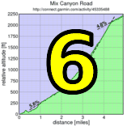

|  |  |
 |
| Skyler Colwell crosses the line at the end of the 2100 foot climb. (Bill Bushnell) |
The 2011 Low-Key Hillclimbs is entering the end game with week 7, Highway 9 out of Saratoga. We'd previously done this one in 1995 and 2006, a bit of neglect for such a classic local climb.
Group 1: Bill Bushnell went off the front as usual, in his hybrid-electric recumbent. Behind him, Tracy Colwell took control from the front of the pack on the early gradual slopes. This continued for awhile until Tracy had gapped the rest of the group, slowly riding away. Game over?
Not quite. Carl Nielson, in particular, took up the reponsibility of the chase. Tracy's gap stabilized, then started to decrease. Then as the gap was almost closed, Brian Lucido, who had been biding his time, moved up to help Carl.
Tracy was caught, but he quickly slotted in with Carl and Brian. All others had been dropped, just Carl, Brian, and Tracy were left. Then Brian made his move.
Tracy, with his early sustained effort, couldn't follow, and neither could Carl. Brian was off. Brian had been expected to make a move today: he'd accumulated volunteer credits early in the series while posting some super-impressive training rides on Strava. And now he was playing his hand.
And it was a winner. Brian pulled away from the other two to take the victory by 8 seconds ahead of a surging Tracy, who was able to drop Carl with his impressive climb-ending sprint. Carl finished a further 6 seconds gap. Then it was another 19 seconds to the next finisher, the early group shattered.
For the women, it was a rare event in Low-Key history, a women's only start. 19 women lined up as group 3, and from them Lisa Penzel put her stamp on the series with an impressive win, Helen Casabona second. Jennie Phillips and Rikke Preisler finished just behind Helen in an exciting fight for the podium.On the team side, it was a hotly contested day. Team Low-Key was strong today, with wins in the hybrid-electric and women's divisions and 4th and 6th in the men's division. But Sisters and Misters of No Mercy was stronger: Brian and Carl delivered a 1-3 in the men's division which, combined with Jennie Phillips' podium spot in the women, sealed the deal for them on the day's top spot. Western Wheelers narrowly edged out Team San Jose and Brown Zone for third.
We had three juniors today, with Riley Auten scoring the highest, ahead of the young brothers Skyler and Liam Colwell. Low-Key loves seeing juniors tackle these challenging climbs.
Thanks to Lane Parker for his fantastic coordination of this climb, and as always thanks to the volunteers and to Howard Kveck for his excellent work as results coordinator.
Strava T-shirt qualifiers indicated with orange background.
| pl | # | name | team | cat | time | mph | fph | score |
|---|---|---|---|---|---|---|---|---|
| 1 | 6 | Bill Bushnell | Low-Key | Its All About The Bike | 19:42 | 20.31 | 6481 | 118.24 |
| pl | # | name | team | cat | time | mph | fph | score |
|---|---|---|---|---|---|---|---|---|
| 1 | 523 | Brian Lucido | Sr's & Mr's of No Mercy | Tandem | 29:43 | 13.47 | 4297 | 126.74 |
| 2 | 48 | Tracy Colwell | Team Colwell | 40+ | 29:51 | 13.41 | 4277 | 126.17 |
| 3 | 248 | Carl Nielson | Sr's & Mr's of No Mercy | M50+ | 29:57 | 13.36 | 4263 | 125.75 |
| 4 | 1 | Daniel Connelly | Low-Key | 3 | 30:16 | 13.22 | 4219 | 124.44 |
| 5 | 510 | Clark Foy | San Jose Bike Club | 45+ | 31:02 | 12.90 | 4114 | 121.36 |
| 6 | 44 | Tim Clark | Low-Key | 40+ | 31:25 | 12.74 | 4064 | 119.88 |
| 7 | 106 | McLovin | The Brown Zone | 1 | 31:41 | 12.63 | 4030 | 118.87 |
| 8 | 144 | Nils Tikkanen | Bike Trip/Symantec | Honey Badger | 31:44 | 12.61 | 4024 | 118.69 |
| 8 | 308 | Rune Dahl | Western Wheelers | 45+ | 31:44 | 12.61 | 4024 | 118.69 |
| 10 | 7 | James Porter | Western Wheelers | 3 | 31:55 | 12.54 | 4000 | 118.00 |
| 11 | 74 | Rich Hill | LGBRC | 45+ | 31:58 | 12.52 | 3994 | 117.82 |
| 12 | 59 | Mark Edwards | Bike Trip/Symantec | 50+ | 32:05 | 12.47 | 3980 | 117.39 |
| 13 | 114 | Steve Peck | Western Wheelers | 45+ | 32:06 | 12.47 | 3978 | 117.33 |
| 14 | 63 | Joe Fant | San Jose Bike Club | 50+ | 32:25 | 12.35 | 3939 | 116.18 |
| 15 | 226 | Tom Gardin | Western Wheelers | 45+ | 32:33 | 12.29 | 3923 | 115.71 |
| 16 | 113 | Christian Paquet | Doogie | 32:46 | 12.21 | 3897 | 114.94 | |
| 17 | 325 | Kevin Keenan | Sr's & Mr's of No Mercy | 55+ | 32:50 | 12.19 | 3889 | 114.71 |
| 18 | 246 | Clark M. Natwick | Pen Velo/Pomodoro | 50+ | 33:20 | 12.01 | 3830 | 112.99 |
| 19 | 261 | Joe Sullivan | San Jose Bike Club | 35+ | 33:29 | 11.95 | 3813 | 112.48 |
| 20 | 251 | Dan Perry | Bike Trip/Symantec | 40+ | 33:34 | 11.92 | 3804 | 112.20 |
| 21 | 133 | Dai Sieh | The Brown Zone | Robusto | 33:38 | 11.90 | 3796 | 111.98 |
| 22 | 96 | Bennett Chi Lee | Speedy Bees | 45+/Ponytail | 33:59 | 11.78 | 3757 | 110.83 |
| 23 | 124 | Dave Rossow | Western Wheelers | 40+ | 34:01 | 11.76 | 3753 | 110.72 |
| 24 | 53 | J.D. Daniels | Eden Bikes | 35+ | 34:02 | 11.76 | 3752 | 110.67 |
| 25 | 213 | Andy Crews | Diablo | 40+ | 34:27 | 11.62 | 3706 | 109.33 |
| 26 | 240 | Paul McKenzie | Marc Pro - Strava | 55+ | 34:46 | 11.51 | 3672 | 108.33 |
| 27 | 429 | John Richardson | Pen Velo/Pomodoro | 55+ | 35:01 | 11.43 | 3646 | 107.56 |
| 28 | 432 | Ken Sato | Bike Trip/Symantec | 45+ | 35:03 | 11.42 | 3643 | 107.46 |
| 29 | 112 | Shance Ordell | Western Wheelers | 35+ 123 | 35:18 | 11.34 | 3617 | 106.69 |
| 30 | 61 | Steven Enns | Dirkless | 35:20 | 11.33 | 3614 | 106.59 | |
| 31 | 82 | Greg Imwalle | 30+ | 35:23 | 11.31 | 3608 | 106.44 | |
| 32 | 702 | Nate Cauffman | UID | 30+ | 35:30 | 11.27 | 3597 | 106.09 |
| 33 | 312 | Rick Ferrell | Bike Trip/Symantec | 50+ | 35:31 | 11.27 | 3595 | 106.04 |
| 34 | 64 | TOM FERREIRA | Eden Bikes | 45+ | 35:41 | 11.22 | 3578 | 105.55 |
| 35 | 233 | Alexander Komlik | San Jose Bike Club | 45+ | 35:55 | 11.14 | 3555 | 104.86 |
| 36 | 127 | Naoto Sato | 45+ | 35:56 | 11.14 | 3553 | 104.81 | |
| 37 | 94 | Jim Langley | Bike Trip/Symantec | 55+ | 35:58 | 11.13 | 3550 | 104.72 |
| 38 | 105 | Russ McCrary | Sr's & Mr's of No Mercy | 50+ | 36:03 | 11.10 | 3542 | 104.47 |
| 39 | 122 | Doug Reynolds | Alberto's Steak House | 60+ | 36:06 | 11.09 | 3537 | 104.33 |
| 40 | 92 | KP | The Brown Zone | None Of Your Bee'S Wax | 36:22 | 11.00 | 3511 | 103.56 |
| 41 | 710 | Andrew Hsu | Pen Velo/Pomodoro | M 35+ Cat 4 | 36:24 | 10.99 | 3508 | 103.47 |
| 42 | 52 | Rob Cosaro | Doogie | 50+ | 36:33 | 10.95 | 3493 | 103.05 |
| 43 | 156 | Matt Wocasek | Bike Trip/Symantec | 45+ | 36:37 | 10.93 | 3487 | 102.86 |
| 44 | 332 | Take Ogawa | 35+ | 36:40 | 10.91 | 3482 | 102.72 | |
| 45 | 267 | Alan Weatherall | San Jose Bike Club | 36:57 | 10.83 | 3455 | 101.93 | |
| 46 | 720 | Jory Stein | Pen Velo/Pomodoro | 50+ | 36:59 | 10.82 | 3452 | 101.84 |
| 47 | 211 | Philip Clark | 25+ | 37:00 | 10.82 | 3451 | 101.79 | |
| 48 | 85 | George Janour | Bike Trip/Symantec | 40+ | 37:04 | 10.80 | 3445 | 101.61 |
| 49 | 712 | Sami Laine | Team Poseur | 40+ | 37:13 | 10.75 | 3431 | 101.20 |
| 50 | 268 | Jens Weber | Doogie | 30+ | 37:15 | 10.74 | 3428 | 101.11 |
| 50 | 709 | Neal Herman | Spike the Wonder Dog | 55+ | 37:15 | 10.74 | 3428 | 101.11 |
| 52 | 305 | Gino Cetani | REI | 40+ | 37:21 | 10.71 | 3418 | 100.84 |
| 53 | 104 | Scott Martin | Bike Trip/Symantec | 50+ | 37:26 | 10.69 | 3411 | 100.61 |
| 54 | 70 | Bruce Gardner | Sr's & Mr's of No Mercy | 40+ | 37:28 | 10.68 | 3408 | 100.52 |
| 54 | 315 | Chris Gros-Balthazard | Diablo | 35+ | 37:28 | 10.68 | 3408 | 100.52 |
| 56 | 700 | Matt Alcorn | Eden Bikes | 25+ | 37:31 | 10.67 | 3403 | 100.39 |
| 57 | 120 | Vinay Ravuri | Georgia Tech | 37:46 | 10.60 | 3381 | 99.73 | |
| 58 | 51 | Richard Contreras | Team Rhus | 50+ | 37:53 | 10.56 | 3370 | 99.42 |
| 59 | 435 | Matthew Werner | Bike Trip/Symantec | 50+ | 37:59 | 10.54 | 3361 | 99.16 |
| 60 | 706 | Alon Golan | Noon Riders | 35+ | 38:02 | 10.52 | 3357 | 99.03 |
| 60 | 235 | Mark LaForge | SSL Cycling Club Club | 50+ | 38:02 | 10.52 | 3357 | 99.03 |
| 62 | 12 | Will von Kaenel | LGBRC | 50+ | 38:05 | 10.51 | 3353 | 98.90 |
| 63 | 119 | Thomas Rabedeau | SLACer | 50+ | 38:06 | 10.50 | 3351 | 98.85 |
| 64 | 20 | Ron Abidog | San Jose Bike Club | 40+ | 38:18 | 10.45 | 3334 | 98.34 |
| 64 | 81 | Brandon Iles | 25+ | 38:18 | 10.45 | 3334 | 98.34 | |
| 66 | 264 | Mike Urbina | Alberto's Steak House | 50+ | 38:19 | 10.44 | 3332 | 98.29 |
| 67 | 148 | David Vrane | Sr's & Mr's of No Mercy | 45+ | 38:23 | 10.43 | 3326 | 98.12 |
| 68 | 30 | George Bonanto | 30+ | 39:03 | 10.25 | 3270 | 96.45 | |
| 69 | 526 | Dennis Pedersen | Bike Trip/Symantec | 50+ | 39:06 | 10.24 | 3265 | 96.33 |
| 70 | 722 | Peter Tapscott | Webcor/Alto Velo | 60+ | 39:11 | 10.21 | 3259 | 96.12 |
| 71 | 334 | Markus Roccaro | Pen Velo/Pomodoro | Master 40+ | 39:26 | 10.15 | 3238 | 95.51 |
| 72 | 153 | Jim Williams | Alberto's Steak House | 60+ | 39:38 | 10.10 | 3222 | 95.03 |
| 73 | 715 | Benoit Pelczar | Bike Trip/Symantec | 35+ | 39:49 | 10.05 | 3207 | 94.59 |
| 74 | 232 | Franz Kelsch | Alberto's Steak House | 60+ | 40:02 | 10.00 | 3189 | 94.08 |
| 75 | 521 | West Kurihara | Team Fremont FFBC p/b Chipotle | 50+ | 40:03 | 9.99 | 3188 | 94.04 |
| 75 | 116 | Thomas Preisler | LGBRC | 55+ | 40:03 | 9.99 | 3188 | 94.04 |
| 77 | 35 | Nic Brummell | Atlas | 50+ | 40:06 | 9.98 | 3184 | 93.92 |
| 78 | 55 | Jon Degenhardt | Alameda Velo | 50+ | 40:07 | 9.98 | 3183 | 93.88 |
| 79 | 313 | David Fitch | Western Wheelers | 65+++ | 40:22 | 9.91 | 3163 | 93.30 |
| 80 | 108 | Paul Melville | Doogie | 60+ | 40:31 | 9.88 | 3151 | 92.96 |
| 81 | 24 | MichaelsJ. Andalora | 55+ | 40:33 | 9.87 | 3149 | 92.88 | |
| 82 | 115 | Ryan Powell | Team Joe Karbowski | 35+ | 40:42 | 9.83 | 3137 | 92.54 |
| 83 | 83 | Tim Irvine | LGBRC | 40+ | 40:47 | 9.81 | 3131 | 92.35 |
| 84 | 93 | Romain Laboisse | Palo Verde Velo | 35+ | 41:12 | 9.71 | 3099 | 91.42 |
| 85 | 42 | Steve Chapel | Western Wheelers | 65+ | 41:24 | 9.67 | 3084 | 90.97 |
| 86 | 274 | Riley Auten | Junior | 41:30 | 9.64 | 3077 | 90.75 | |
| 87 | 32 | Dan Brehmer | SLACer | 45+ | 45:58 | 8.71 | 2778 | 90.51T |
| 88 | 707 | Gary Griffin | Bike Trip/Symantec | 60+ | 41:46 | 9.58 | 3057 | 90.18 |
| 89 | 310 | Giles Douglas | 35+ | 41:50 | 9.57 | 3052 | 90.03 | |
| 90 | 704 | Jim Crotty | Age: 56 | 41:51 | 9.56 | 3051 | 90.00 | |
| 91 | 249 | Jeffrey Opp | Doogie | 30+ | 42:18 | 9.46 | 3018 | 89.04 |
| 92 | 31 | Mark Boolootian | Bike Trip/Symantec | 50+ | 42:27 | 9.43 | 3008 | 88.72 |
| 93 | 724 | Walter Wang | Peninsula Bible Church Cupertino | 35+ | 42:30 | 9.42 | 3004 | 88.62 |
| 94 | 717 | Cory Roay | Pen Velo/Pomodoro | 50+ | 42:31 | 9.41 | 3003 | 88.58 |
| 95 | 38 | Patrick Callahan | Buttered Muffins | 40+ | 42:41 | 9.38 | 2991 | 88.24 |
| 96 | 403 | Bernard Bell | 50+ | 42:47 | 9.35 | 2984 | 88.03 | |
| 97 | 716 | Wayne Richardson | 50+ | 42:55 | 9.33 | 2975 | 87.76 | |
| 98 | 243 | Edward Miller | SLACer | 70+ | 43:10 | 9.27 | 2958 | 87.25 |
| 99 | 21 | Detlef Adam | Bike Trip/Symantec | 45+ | 43:17 | 9.25 | 2950 | 87.02 |
| 100 | 68 | Stephen Fong | San Jose Bike Club | 5 | 43:57 | 9.11 | 2905 | 85.70 |
| 101 | 84 | Tom Jakaby | Buycell | 50+ | 44:09 | 9.06 | 2892 | 85.31 |
| 102 | 76 | Jerry Hitchcock | Integrate | 55+ | 44:29 | 9.00 | 2870 | 84.67 |
| 103 | 160 | Craig Peters | Tradewinds Cycling Team | 40+ | 44:30 | 8.99 | 2869 | 84.64 |
| 104 | 46 | Kevin Colagiovanni | Team DUD | 25+ | 44:39 | 8.96 | 2860 | 84.35 |
| 105 | 146 | Luis Valente | Palo Verde Velo | 50+ | 45:41 | 8.76 | 2795 | 82.44 |
| 106 | 713 | John McCabe | Alameda Velo | 40+ | 46:00 | 8.70 | 2776 | 81.88 |
| 107 | 701 | Clinton Bauder | Team Poseur | 40+ | 46:04 | 8.69 | 2772 | 81.76 |
| 108 | 28 | Jan Berka | 45+ | 46:40 | 8.58 | 2736 | 80.71 | |
| 109 | 532 | Frank Viggiano | Palo Verde Velo | 50+ | 49:34 | 8.07 | 2576 | 75.98 |
| 110 | 22 | Michael Ahern | LGBRC | 45+ | 50:43 | 7.89 | 2518 | 74.26 |
| 111 | 328 | Kris McQueen | Diablo | 35+ | 52:07 | 7.68 | 2450 | 72.27 |
| 112 | 703 | Bob Corman | Spike the Wonder Dog | 55+ | 54:07 | 7.40 | 2359 | 69.60 |
| 113 | 708 | Bob Gumaer | UID | 55:26 | 7.22 | 2303 | 67.94 | |
| 114 | 711 | Todd Kvamme | Peninsula Bible Church Cupertino | 40+ | 56:27 | 7.09 | 2262 | 66.72 |
| 115 | 47 | Skyler Colwell | Team Colwell | Junior | 59:54 | 6.68 | 2132 | 62.88 |
| 116 | 400 | Liam Colwell | Team Colwell | Junior | 77:56 | 5.14 | 1638 | 48.33 |
| pl | # | name | team | cat | time | mph | fph | score |
|---|---|---|---|---|---|---|---|---|
| 1 | 250 | Lisa Penzel | Low-Key | 45+ | 37:29 | 10.68 | 3406 | 121.50 |
| 2 | 40 | Helen Casabona | Pen Velo/Pomodoro | 50+ | 38:36 | 10.37 | 3308 | 117.98 |
| 3 | 423 | Jennie Phillips | Sr's & Mr's of No Mercy | Tandem-Onium! | 38:41 | 10.35 | 3301 | 117.73 |
| 4 | 426 | Rikke Preisler | The Brown Zone | 35+ | 38:46 | 10.32 | 3294 | 117.48 |
| 5 | 131 | Lynn Sestak | San Jose Bike Club | 50+ | 39:20 | 10.17 | 3246 | 115.78 |
| 6 | 714 | McLovely | The Brown Zone | 1 | 39:33 | 10.12 | 3228 | 115.15 |
| 7 | 8 | Janet Martinez | Sr's & Mr's of No Mercy | 40+ | 39:45 | 10.07 | 3212 | 114.57 |
| 8 | 723 | Leah Toeniskoetter | The Brown Zone | 3 | 39:55 | 10.03 | 3199 | 114.09 |
| 9 | 75 | Laura Hipp | Western Wheelers | 4 | 40:58 | 9.77 | 3117 | 111.17 |
| 10 | 157 | Jamie Yang | 25+ | 42:50 | 9.34 | 2981 | 106.32 | |
| 11 | 520 | Kstiv | The Brown Zone | 40+ | 42:55 | 9.33 | 2975 | 106.12 |
| 12 | 62 | Lori Fabris | Plus 3 | 50+ | 45:25 | 8.81 | 2811 | 100.28 |
| 13 | 60 | Lisa Emmerich | Sr's & Mr's of No Mercy | 50+ | 48:25 | 8.27 | 2637 | 94.06 |
| 14 | 522 | Winnie Lam | SLACer | 25+ | 45:58 | 8.71 | 2778 | 90.51T |
| 15 | 217 | Danielle Dettling | Rinat | 30+ | 51:09 | 7.82 | 2496 | 89.04 |
| 16 | 161 | Dawn Adams | LGBRC | 40+ | 53:39 | 7.46 | 2380 | 84.89 |
| 17 | 306 | Alison Chaiken | Sr's & Mr's of No Mercy | 45+ | 54:08 | 7.39 | 2359 | 84.13 |
| 18 | 3 | Patt Baenen | Beat the Clock | 45+++++ | 54:33 | 7.34 | 2341 | 83.49 |
| 19 | 345 | Heidi Fraser | 50+ | 55:58 | 7.15 | 2281 | 81.37 | |
| 20 | 77 | Christine Holmes | Low-Key | 45+ | 59:12 | 6.76 | 2157 | 76.93 |
| 21 | 4 | Pat Parseghian | 55+ | 63:57 | 6.26 | 1997 | 71.21 |
| pl | team | score | riders |
|---|---|---|---|
| 1 | Sr's & Mr's of No Mercy | 370.22 | Brian Lucido, Carl Nielson, Kevin Keenan, Russ McCrary, Bruce Gardner, David Vrane, Jennie Phillips, Janet Martinez, Lisa Emmerich, Alison Chaiken |
| 2 | Low-Key | 365.82 | Bill Bushnell, Daniel Connelly, Tim Clark, Lisa Penzel, Christine Holmes |
| 3 | Western Wheelers | 354.02 | Rune Dahl, James Porter, Steve Peck, Tom Gardin, Dave Rossow, Shance Ordell, David Fitch, Laura Hipp, Steve Chapel |
| 4 | San Jose Bike Club | 353.33 | Clark Foy, Joe Fant, Joe Sullivan, Alexander Komlik, Alan Weatherall, Ron Abidog, Lynn Sestak, Stephen Fong |
| 5 | The Brown Zone | 351.50 | McLovin, Dai Sieh, KP, Rikke Preisler, McLovely, Leah Toeniskoetter, Kstiv |
| 6 | Bike Trip/Symantec | 348.28 | Nils Tikkanen, Mark Edwards, Dan Perry, Ken Sato, Rick Ferrell, Jim Langley, Matt Wocasek, George Janour, Scott Martin, Matthew Werner, Dennis Pedersen, Benoit Pelczar, Gary Griffin, Mark Boolootian, Detlef Adam |
| 7 | Pen Velo/Pomodoro | 338.53 | Clark M. Natwick, John Richardson, Andrew Hsu, Jory Stein, Helen Casabona, Markus Roccaro, Cory Roay |
| 8 | Doogie | 319.10 | Christian Paquet, Rob Cosaro, Jens Weber, Paul Melville, Jeffrey Opp |
| 9 | Eden Bikes | 316.60 | J.D. Daniels, TOM FERREIRA, Matt Alcorn |
| 10 | LGBRC | 310.76 | Rich Hill, Will von Kaenel, Thomas Preisler, Tim Irvine, Michael Ahern, Dawn Adams |
| 11 | 306.57 | Greg Imwalle, Philip Clark, Brandon Iles, George Bonanto, Giles Douglas, Pat Parseghian | |
| 12 | Alberto's Steak House | 297.65 | Doug Reynolds, Mike Urbina, Jim Williams, Franz Kelsch |
| 13 | Diablo | 282.12 | Andy Crews, Chris Gros-Balthazard, Kris McQueen |
| 14 | SLACer | 279.86 | Thomas Rabedeau, Edward Miller, Dan Brehmer, Winnie Lam |
| 15 | Palo Verde Velo | 249.84 | Romain Laboisse, Luis Valente, Frank Viggiano |
| 16 | Team Colwell | 237.38 | Tracy Colwell, Skyler Colwell, Liam Colwell |
| 17 | Team Poseur | 182.96 | Sami Laine, Clinton Bauder |
| 18 | Alameda Velo | 175.76 | Jon Degenhardt, John McCabe |
| 19 | UID | 174.04 | Nate Cauffman, Bob Gumaer |
| 20 | Spike the Wonder Dog | 170.71 | Neal Herman, Bob Corman |
| 21 | Peninsula Bible Church Cupertino | 155.34 | Walter Wang, Todd Kvamme |
| 22 | Speedy Bees | 110.83 | Bennett Chi Lee |
| 23 | Marc Pro - Strava | 108.33 | Paul McKenzie |
| 24 | Dirkless | 106.59 | Steven Enns |
| 25 | REI | 100.84 | Gino Cetani |
| 26 | Plus 3 | 100.28 | Lori Fabris |
| 27 | Georgia Tech | 99.73 | Vinay Ravuri |
| 28 | Team Rhus | 99.42 | Richard Contreras |
| 29 | Noon Riders | 99.03 | Alon Golan |
| 29 | SSL Cycling Club Club | 99.03 | Mark LaForge |
| 31 | Webcor/Alto Velo | 96.12 | Peter Tapscott |
| 32 | Team Fremont FFBC p/b Chipotle | 94.04 | West Kurihara |
| 33 | Atlas | 93.92 | Nic Brummell |
| 34 | Team Joe Karbowski | 92.54 | Ryan Powell |
| 35 | Rinat | 89.04 | Danielle Dettling |
| 36 | Buttered Muffins | 88.24 | Patrick Callahan |
| 37 | Buycell | 85.31 | Tom Jakaby |
| 38 | Integrate | 84.67 | Jerry Hitchcock |
| 39 | Tradewinds Cycling Team | 84.64 | Craig Peters |
| 40 | Team DUD | 84.35 | Kevin Colagiovanni |
| 41 | Beat the Clock | 83.49 | Patt Baenen |